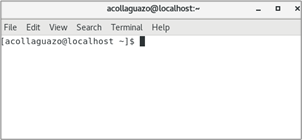

[NT2] NOTA TÉCNICA N°. 2
ADMINISTRACIÓN DE LINUX MEDIANTE LÍNEA DE COMANDOS
Estructura de comandos
linux@localhost: ~$ [comando] [opciones] [argumentos]

Comandos básicos
- sudo su: Cambiar de usuario.
- mkdir: Crea un directorio colocando el nombre del nuevo directorio.
- cd: Navega de un directorio actual a otro. Al utilizar únicamente el comando cd, devuelve al usuario
al
directorio de inicio.
- ll: Muestra una lista detallada del contenido de un directorio.
- pwd: arroja el directorio de la ubicación actual del usuario en el sistema de archivos.
- cp: Copia un archivo del directorio indicado.
- mv: Mueve el archivo, indicando como parámetros el directorio origen y destino.
- rm -Rf: Elimina un directorio o carpeta, es necesario utilizar la opción ‘-Rf’ para un borrado
recursivo.
- nano: Edita o crea archivos de texto.
- more / less: Muestra el contenido de un archivo.
- kill: Elimina un proceso usando el identificador del proceso.
- wget: Descarga de archivos desde Internet usando el enlace.
- df -hk: Muestra la capacidad del disco duro, la opción -k indica la unidad en kilobytes.
- top: Muestra los procesos activos en el sistema.
- chmod: Modifica los permisos de un archivo o directorio.
Comandos para instalación/actualización de paquetes
- apt-get / yum -y install: En Ubuntu se usa “apt-get”, que instala un paquete específico usando
Internet. En CentOS se usa el gestor de paquetes “yum” que instala un paquete desde Internet.
- apt-get / yum update: Actualiza la lista de paquetes disponibles y sus versiones de los repositorios
que definidos en el archivo /etc/apt/sources.list.
- apt-get / yum upgrade: Realiza actualizaciones de los paquetes en la lista obtenida en apt-get
update.
Comandos para comunicación en la red
- ifconfig / ip addr ls: Muestra las interfaces de red activas.
- netstat -nl: Muestra los sockets con los puertos de las conexiones establecidas.
- route -n: Muestra las rutas y la puerta de enlace.
- ping -I ip_origen ip_destino: Prueba de conectividad de un host de origen a un host de destino.
- traceroute: Muestras las rutas hacia un destino.
- lynx: Navegación en modo texto.
- service network restart // /etc/init.d/network-manager restart: Permite reiniciar el servicios de
red.